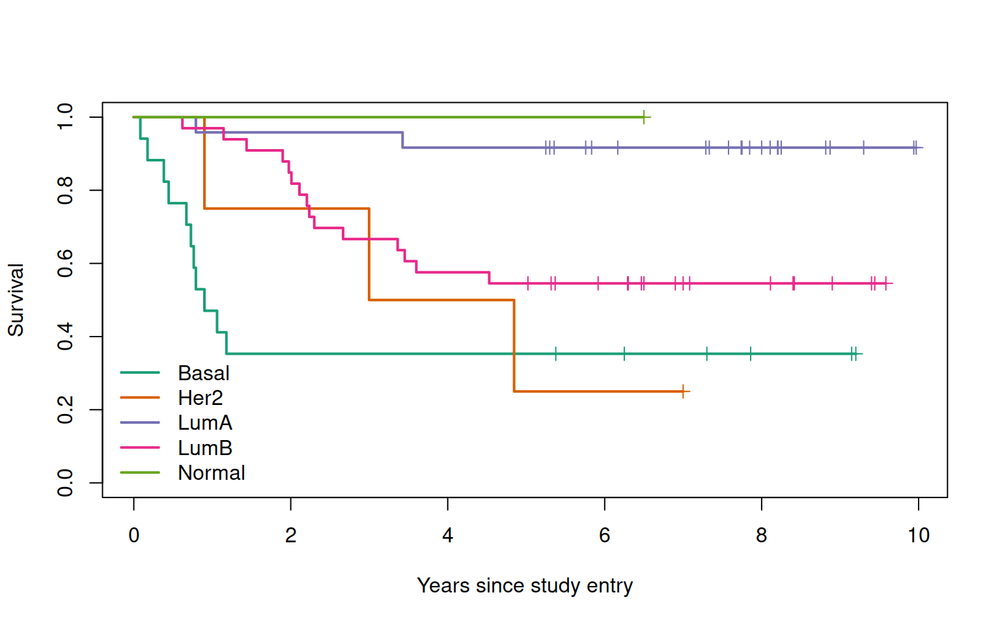
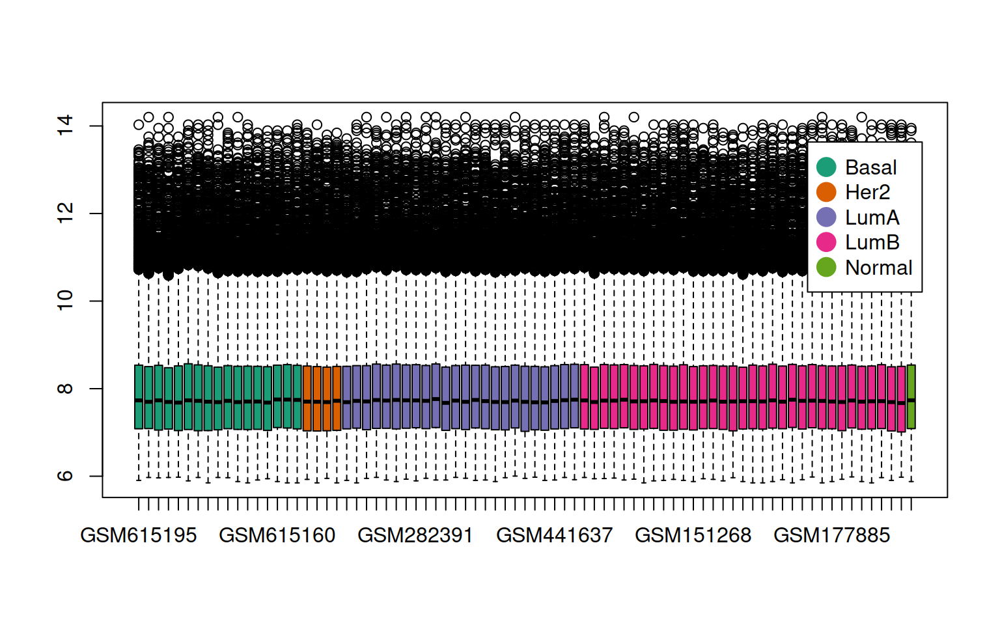
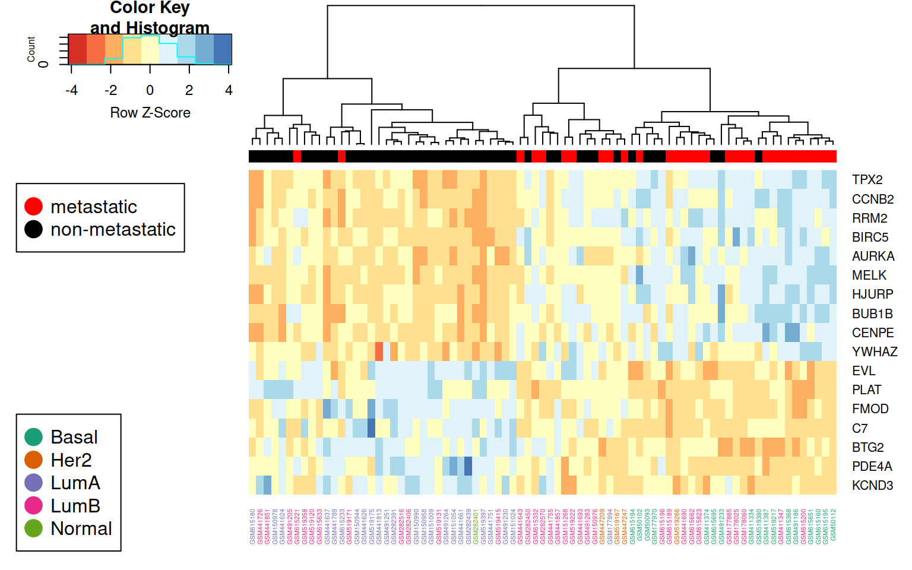

library(survival)
library(RColorBrewer)
library(dplyr)
library(gplots)
library(igraph)
library(ndexr)
library(RCX)We applied our methods to a large breast cancer patient dataset that we previously studied and preprocessed [27]. That data is compiled out of 10 public microarray datasets measured on Affymetrix Human Genome HG-U133 Plus 2.0 and HG-U133A arrays. The datasets are available from the Gene Expression Omnibus (GEO) [28] data repository (accession numbers GSE25066, GSE20685, GSE19615, GSE17907, GSE16446, GSE17705, GSE2603, GSE11121, GSE7390, GSE6532). The RMA probe-summary algorithm [29] was used to process each of the datasets, and only samples with metadata on metastasis-free survival were selected and combined together on the basis of HG-U133A array probe names. Quantile normalization was applied over all datasets. In the case of several probes mapping to one gene, only the probe with the highest average value was considered.
The patients were assigned to one of two classes: 393 patients with distant metastasis within the first 5 years and 576 patients without metastasis having the last follow-up between 5 and 10 years. Breast cancer molecular subtypes for the patient samples were predicted in [27] utilizing genefu R-package [30].
The constant of labels_GEO_HG.csv
People who had metastatic event during the first 0-5 years (correspond to “1”). 393 patients.
People who did not have metastatic event during the first five years and who had the last follow up between 5 and 10 years. No metastatic events at all. This class corresponds to “0”. 576 patients.
We retrained the Graph-CNN on 872 patients and generated relevances for 97 test patients.
It is not stated which patients those 97 patients are!!! Use own information
Load the patient information about the 97 patients:
patients <- read.csv("data/patient_information.csv", stringsAsFactors = F)
head(patients)The patient data is composed of different subtypes with and without metastatic events:
table(patients[, c("subtype", "met.event")])## met.event
## subtype 0 1
## Basal 6 13
## Her2 1 4
## LumA 25 3
## LumB 24 18
## Normal 2 1There is a difference between labeled and predicted metastatic event. Therefore the patients are filtered for only correctly predicted metastatic events:
## Check colnames
colnames(patients) <- gsub("Patient.ID", "geo_accession", colnames(patients))
colnames(patients) <- gsub("Predicted", "predicted", colnames(patients))
# colnames(patients) = gsub('Concordance',
# 'concordance', colnames(patients))
## Only select patients, that are correctly classified
patients <- patients[patients$Concordance == 1, ]
patients$Concordance <- NULL
patients <- patients[order(patients$subtype),
]
## differentiate between the two groups
selMetastatic <- patients$met.event == 1
head(patients)Survival by subtype:
survival <- survfit(
Surv(mfs.years, met.event) ~
subtype, data = patients
)
print(survival)## Call: survfit(formula = Surv(mfs.years, met.event) ~ subtype, data = patients)
##
## n events median 0.95LCL 0.95UCL
## subtype=Basal 17 11 0.90 0.728 NA
## subtype=Her2 4 3 3.92 0.900 NA
## subtype=LumA 24 2 NA NA NA
## subtype=LumB 33 15 NA 3.362 NA
## subtype=Normal 1 0 NA NA NAcolors <- brewer.pal(5, "Dark2")
names(colors) <- c("Basal", "Her2", "LumA", "LumB", "Normal")
plot(
survival, col = colors, lwd = 2, mark.time = TRUE, xlab = "Years since study entry",
ylab = "Survival"
)
legend(
"bottomleft", names(colors),
col = colors, lwd = 2, bty = "n"
)
http://mypathsem.bioinf.med.uni-goettingen.de/resources/glrp http://mypathsem.bioinf.med.uni-goettingen.de/fileadmin/mypathsem_resources/WP3/GEO_HG_PPI.csv.zip
Gene expression of the whole data set:
ge_all <- read.csv("data/GEO_HG_PPI.csv.gz", stringsAsFactors = F)Get the column names for the genes and the patient ids:
ge_gene_col <- "probe"
ge_patient_cols <- colnames(ge_all)[colnames(ge_all) !=
ge_gene_col]Get the mean, standard deviation and boundaries for the 25% and 75% quantile for each gene (probe) based on its expression in all patients.
ge_with_statistics <- ge_all %>%
rowwise() %>%
do(
{
curRow <- unlist(.[ge_patient_cols])
result <- data.frame(., stringsAsFactors = F)
result["mean"] <- mean(curRow)
result["stdev"] <- sd(curRow)
quartiles <- quantile(curRow, probs = c(0, 0.25, 0.4, 0.5, 0.6, 0.75, 1))
result["Q25"] <- quartiles["25%"]
result["Q50"] <- quartiles["50%"]
result["Q75"] <- quartiles["75%"]
result
}
)
print(
unique(
gsub("GSM[0-9]+", "GSM*", colnames(ge_with_statistics))
)
)## [1] "GSM*" "probe" "mean" "stdev" "Q25" "Q50" "Q75"tmp_no_col <- dim(ge_with_statistics)[2]
head(ge_with_statistics[, (tmp_no_col - 5):tmp_no_col])This data can be used to calculate the expression level of a gene (LOW, NORMAL or HIGH) using quartile boundaries.
ge_expression_level_by_quantiles <- ge_with_statistics %>%
rowwise() %>%
do(
{
curRow <- unlist(.[ge_patient_cols])
l <- unlist(.["Q25"])
h <- unlist(.["Q75"])
curRow[ge_patient_cols] <- ifelse(
curRow < l, "LOW", ifelse(curRow > h, "HIGH", "NORMAL")
)
curRow <- c(
unlist(.[ge_gene_col]),
curRow
)
result <- as.data.frame(
t(curRow),
stringsAsFactors = F
)
result
}
)
print(
unique(
gsub(
"GSM[0-9]+", "GSM*", colnames(ge_expression_level_by_quantiles)
)
)
)## [1] "probe" "GSM*"head(ge_expression_level_by_quantiles[, 1:7])Get the gene expression only for the patients and order patients by subtype
ge_patients <- ge_all[, patients$geo_accession[order(patients$subtype)]]
rownames(ge_patients) <- ge_all$probeCheck the gene expression data to be normalized, therefore make a boxplot of the expression data:
boxColors <- sapply(
colnames(ge_patients),
function(x) {
subtype <- patients$subtype[patients$geo_accession ==
x]
return(colors[subtype])
}
)
boxplot(ge_patients, col = boxColors)
par(xpd = TRUE)
legend(
"topright", legend = names(colors),
col = colors, bty = "o", pch = 20, pt.cex = 3, cex = 1,
horiz = FALSE, inset = c(0.03, 0.1)
)
t-test
## perform a t-test for each gene
ttest <- apply(
ge_patients, 1, function(x) {
res <- t.test(x[selMetastatic], y = x[!selMetastatic])
return(res$p.value)
}
)
## adjust for multiple testing
de <- data.frame(
prope = names(ttest),
pvalue = ttest, qvalue = p.adjust(ttest)
)
## re-order by q-value
de <- de[order(de$qvalue),
]
## select differentially expressed genes
de_genes <- de$prope[de$qvalue < 0.01]
print(de[de_genes, ])A heatmap is a graphical representation of data where the individual values contained in a matrix are represented as colors. Now that we have a subset of DE genes, we can use their counts to generate a heatmap. We expect DE genes to be able to separate the samples from different groups into different clusters of the dendrograms.
# colors
pal <- brewer.pal(9, "RdYlBu")
# heatmap
heatmap.2(
as.matrix(ge_patients[de_genes,]) ,
dist=function(x) {as.dist(1-cor(t(x)))},
scale="row",
col=pal,
colCol = boxColors,
ColSideColors = ifelse(patients$met.event == 1, "red", "black"),
trace="none",
cexRow=1,
cexCol=0.5,
dendrogram = "column"
)
## legend
par(xpd=TRUE)
## non-/metastatic
legend("topleft",
legend = c("metastatic", "non-metastatic") ,
col = c("red", "black") ,
bty = "o", pch=20 , pt.cex = 3, cex = 1,
horiz = FALSE,
inset=c(-0.1,0.25)
)
## subtypes
legend("bottomleft",
legend = names(colors) ,
col = colors ,
bty = "o", pch=20 , pt.cex = 3, cex = 1,
horiz = FALSE,
inset=c(-0.1,-0.27)
)
Paper supplement:
relevance_score <- read.csv("data/ppi_relevance_score.csv")
print(
unique(gsub("GSM[0-9]+", "GSM*", colnames(relevance_score)))
)## [1] "GSM*" "probe"tmp_no_col <- dim(relevance_score)[2]
head(relevance_score[, (tmp_no_col - 6):tmp_no_col])We used the Human Protein Reference Database (HPRD) protein-protein interaction (PPI) network [26] as the molecular network to structure the gene expression data. The database contains protein-protein interaction information based on yeast two-hybrid analysis, in vitro and in vivo methods. The PPI network is an undirected graph with binary interactions between pairs of proteins. The graph is not connected.
[26] Keshava Prasad TS, Goel R, Kandasamy K, Keerthikumar S, Kumar S, Mathivanan S, Telikicherla D, Raju R, Shafreen B, Venugopal A, Balakrishnan L, Marimuthu A, Banerjee S, Somanathan DS, Sebastian A, Rani S, Ray S, Harrys Kishore CJ, Kanth S, Ahmed M, Kashyap MK, Mohmood R, Ramachandra YL, Krishna V, Rahiman BA, Mohan S, Ranganathan P, Ramabadran S, Chaerkady R, Pandey A. Human protein reference database?2009 update. Nucleic Acids Res. 2009; 37:767–72. https://doi.org/10.1093/nar/gkn892.
From website http://hprd.org/ Latest release: Apr 13, 2010
http://mypathsem.bioinf.med.uni-goettingen.de/resources/glrp
http://mypathsem.bioinf.med.uni-goettingen.de/fileadmin/mypathsem_resources/WP3/HPRD_PPI.csv.zip
ppi_network_matrix <- read.csv("data/HPRD_PPI.csv.gz", check.names = FALSE)
ppi_network_igraph <- graph_from_adjacency_matrix(
as.matrix(ppi_network_matrix),
mode = "undirected"
)
gorder(ppi_network_igraph)## [1] 6888gsize(ppi_network_igraph)## [1] 27859Remove multiple edges and loops from one node to itself from the network.
ppi_network_igraph <- simplify(
ppi_network_igraph, remove.multiple = T, remove.loops = T
)
gorder(ppi_network_igraph)## [1] 6888gsize(ppi_network_igraph)## [1] 27841Prepare the igraph network for converting to RCX, therefore IDs have to be set for nodes and edges. The CX convention is, in contrast to R, that the IDs start at 0.
V(ppi_network_igraph)$id <- seq(
0, gorder(ppi_network_igraph) -
1
)
E(ppi_network_igraph)$id <- seq(
0, gsize(ppi_network_igraph) -
1
)
summary(ppi_network_igraph)## IGRAPH 7426dd4 UN-- 6888 27841 --
## + attr: name (v/c), id (v/n), id (e/n)For the conversion from igraph to RCX, the vertex attribute containing the node names has to be specified.
ppi_network_rcx <- fromIgraph(ppi_network_igraph, nodeName = "name")
ppi_network_rcx$metaData## Meta-data:
## name version idCounter elementCount consistencyGroup
## 1 nodes 1.0 6887 6888 1
## 2 edges 1.0 27840 27841 1Add some information to the network
networkAttributes <- createNetworkAttributes(
name = c("author",
"name",
"description",
"reference",
"organism",
"networkType"),
value = c("Florian J. Auer",
"Human Protein Reference Database (HPRD) PPI network",
paste0('Protein-protein interaction (PPI) network from the ',
'<a href="http://hprd.org/" target="_blank">',
'Human Protein Reference Database (HPRD)</a> ',
'used for training and generating subnetworks'),
paste0('Chereda, H., Bleckmann, A., Menck, K. et al. ',
'Explaining decisions of graph convolutional neural networks: ',
'patient-specific molecular subnetworks responsible for ',
'metastasis prediction in breast cancer. Genome Med 13, 42 (2021). ',
'<a href="https://doi.org/10.1186/s13073-021-00845-7" ',
'target="_blank">https://doi.org/10.1186/s13073-021-00845-7</a>'),
"Homo sapiens",
"Protein-protein interaction")
)
ppi_network_rcx <- updateNetworkAttributes(ppi_network_rcx, networkAttributes)
ppi_network_rcx$metaData## Meta-data:
## name version idCounter elementCount consistencyGroup
## 1 nodes 1.0 6887 6888 1
## 2 edges 1.0 27840 27841 1
## 3 networkAttributes 1.0 NA 6 1To make the network available to for further analyses, we can upload the network to the NDEx platform (https://www.ndexbio.org/). Of course for this an account is required.
ndex_con <- ndex_connect(username = "florianjauer", password = "****")
ndexHPRDuuid <- ndex_create_network(ndex_con, ppi_network_rcx)Until now, the network is only visible to the owner. To change that, and make it visible to everyone, we have to update this property:
ndex_network_set_systemProperties(ndex_con, ndexHPRDuuid, visibility = TRUE)This network is also available on the NDEx platform as “Human Protein Reference Database (HPRD) PPI network”:
https://www.ndexbio.org/viewer/networks/079f4c66-3b77-11ec-b3be-0ac135e8bacf
The R package ndexr can be used to download the network from NDEx:
ndex_con <- ndex_connect()
ndexHPRD <- ndex_find_networks(ndex_con, "HPRD AND owner:florianjauer")
print(
ndexHPRD[c(
"name", "owner", "externalId", "nodeCount", "edgeCount"
)]
)ppi_network_rcx <- ndex_get_network(ndex_con, "079f4c66-3b77-11ec-b3be-0ac135e8bacf")
print(ppi_network_rcx$metaData)## Meta-data:print(ppi_network_rcx$networkAttributes$name)## [1] "name" "description" "version" "author" "networkType" "organism" "reference"NDEx added automatically the version to the network attributes.
sessionInfo()## R version 4.0.3 (2020-10-10)
## Platform: x86_64-pc-linux-gnu (64-bit)
## Running under: Ubuntu 20.04.3 LTS
##
## Matrix products: default
## BLAS: /usr/lib/x86_64-linux-gnu/blas/libblas.so.3.9.0
## LAPACK: /usr/lib/x86_64-linux-gnu/lapack/liblapack.so.3.9.0
##
## locale:
## [1] LC_CTYPE=en_US.UTF-8 LC_NUMERIC=C LC_TIME=de_DE.UTF-8 LC_COLLATE=en_US.UTF-8
## [5] LC_MONETARY=de_DE.UTF-8 LC_MESSAGES=en_US.UTF-8 LC_PAPER=de_DE.UTF-8 LC_NAME=C
## [9] LC_ADDRESS=C LC_TELEPHONE=C LC_MEASUREMENT=de_DE.UTF-8 LC_IDENTIFICATION=C
##
## attached base packages:
## [1] stats graphics grDevices utils datasets methods base
##
## other attached packages:
## [1] XML_3.99-0.8 httr_1.4.2 RJSONIO_1.3-1.6 pacman_0.5.1 devtools_2.4.2
## [6] usethis_2.1.2 timeSeries_3062.100 timeDate_3043.102 pander_0.6.4 xtable_1.8-4
## [11] stringr_1.4.0 BiocStyle_2.18.1 RCX_0.99.1 ndexr_1.17.0 igraph_1.2.7
## [16] gplots_3.1.1 dplyr_1.0.7 RColorBrewer_1.1-2 survival_3.2-7
##
## loaded via a namespace (and not attached):
## [1] pkgload_1.2.3 jsonlite_1.7.2 splines_4.0.3 gtools_3.9.2 assertthat_0.2.1
## [6] BiocManager_1.30.16 highr_0.9 stats4_4.0.3 remotes_2.4.1 yaml_2.2.1
## [11] sessioninfo_1.1.1 pillar_1.6.4 lattice_0.20-41 glue_1.4.2 digest_0.6.28
## [16] htmltools_0.5.2 Matrix_1.2-18 plyr_1.8.6 pkgconfig_2.0.3 bookdown_0.24
## [21] purrr_0.3.4 webshot_0.5.2 processx_3.5.2 tibble_3.1.5 generics_0.1.1
## [26] ellipsis_0.3.2 DT_0.21 withr_2.4.2 cachem_1.0.6 BiocGenerics_0.36.1
## [31] cli_3.0.1 mime_0.12 magrittr_2.0.1 crayon_1.4.1 ps_1.6.0
## [36] memoise_2.0.0 evaluate_0.14 fs_1.5.0 fansi_0.5.0 pkgbuild_1.2.0
## [41] graph_1.68.0 prettyunits_1.1.1 tools_4.0.3 formatR_1.11 lifecycle_1.0.1
## [46] callr_3.7.0 compiler_4.0.3 jquerylib_0.1.4 caTools_1.18.2 tinytex_0.34
## [51] rlang_0.4.12 grid_4.0.3 htmlwidgets_1.5.4 crosstalk_1.1.1 bitops_1.0-7
## [56] rmarkdown_2.11 testthat_3.1.0 DBI_1.1.1 curl_4.3.2 markdown_1.1
## [61] R6_2.5.1 knitr_1.36 fastmap_1.1.0 utf8_1.2.2 rprojroot_2.0.2
## [66] desc_1.4.0 KernSmooth_2.23-17 stringi_1.7.5 parallel_4.0.3 Rcpp_1.0.7
## [71] vctrs_0.3.8 tidyselect_1.1.1 xfun_0.27